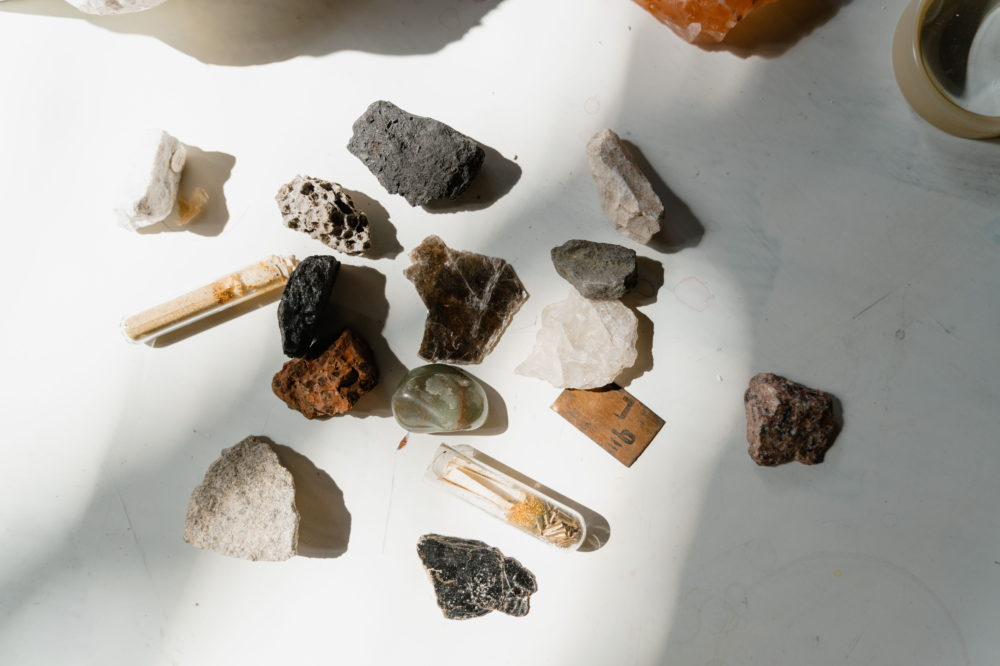

specimen index / coastal ecology / field notes


from the edge of land and water
Patricia
Bishop
Environmental Planning · Ecology Research · Fieldwork
Environmental planning, ecology research, and fieldwork rooted in curiosity about rivers, wetlands, coastal habitats, and the species that move through them.
wetlands
fisheries ecology
habitat restoration
conservation planning
fisheries ecology
habitat restoration
conservation planning
Portland, Maine · fieldwork · restoration · aquatic systems
04